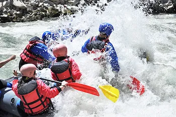

Our Rafting Trips
Ready for Your Next Adventure?
Contact our team to learn more about our rafting experiences and plan your next adventure.
Contact UsRiver Adventure

Enjoy an unforgettable journey along the river as you navigate beautiful waterways, discover breathtaking natural scenery, and experience the excitement of white water rafting. This adventure is perfect for anyone looking to enjoy the outdoors and create lasting memories.
Rapids Challenge

Are you ready for a bigger challenge? Take on powerful rapids, exciting turns, and rushing waters with our experienced river guides. This adventure is designed for thrill-seekers who want to test their courage, teamwork, and rafting skills.
Splash Adventure

Get ready to make a splash! Enjoy an exciting rafting experience filled with refreshing waves, laughter, and unforgettable moments. Whether you're sharing the adventure with friends or family, this trip promises fun and excitement along the river.
Compare Our Rafting Trips
| Trip Name | Duration | Difficulty | Price |
|---|---|---|---|
| River Adventure | 2 hours | Beginner | $45 |
| Splash Adventure | 3 hours | Intermediate | $65 |
| Rapids Challenge | 4 hours | Advanced | $85 |